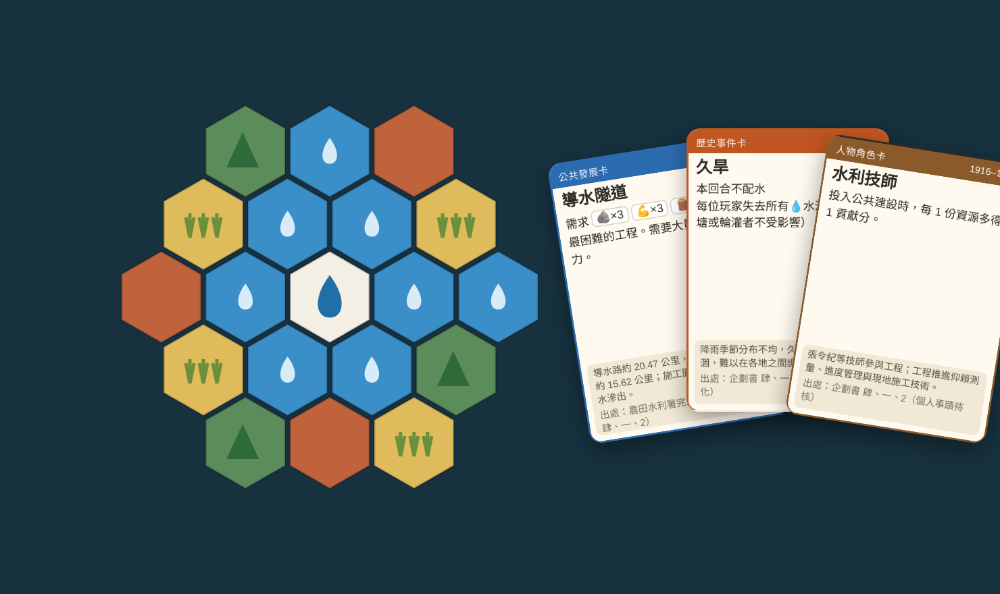

色彩取自桃園台地的材質：圳道混凝土、閘門鑄鐵、紅土、埤塘夜水、閘門黃銅、圳水與秧苗。下方三個區塊是三種區域的樣張，文字全部取自網站現有的資料檔。
思源宋體 900：歷史年份與大數字
思源黑體 900 與 300：介面與產品
半合作策略桌遊：大家一起蓋好桃園大圳，再各自經營自己的田。

臺灣總督府為增加糧食生產，桃園大圳官設工程開工。
成立公共埤圳桃園大圳組合，負責貯水池與給水路等工程。
5 月 26 日，導水路及主要幹支分線通水。
從大漢溪上游石門取水，利用台地向西北傾斜的地勢，讓水靠重力流上台地。
1916 年開工。從大漢溪上游石門取水，利用台地向西北傾斜的地勢，讓水靠重力流上台地。
水從右下方的石門取水口進來，沿著紅色的水圳一路往西北分出支線，再流進一口口藍色的埤塘，最後送到田裡。
在新頁面打開互動地圖（手機建議用這個）